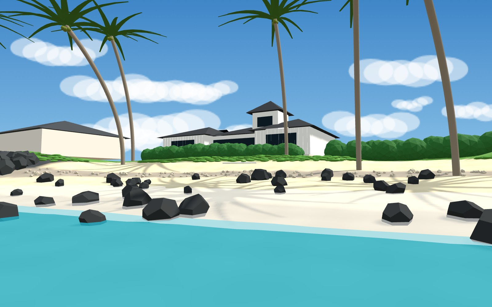

Laulea Living Shoreline
A soft, planted shoreline for the eroding beachfront at 461 Laulea Place, designed on the 2023 USGS lidar of your lot. A sand berm takes the winter swell. A planted dune rising to +3.7 m keeps waves off the lawn. Native plants, two kou shade trees, a sand path and an open view from the lanai make it a place to enjoy. No walls or rocks, as Hawaiʻi's ban on private shoreline hardening at sand beaches requires.
Before and after
Drag across each image. The ground, bank, berm and dune are the real 2023 lidar surface and the designed grading surface. The house outline comes from the January 2026 aerial. Plants are placed by planting zone, so their positions match the planting plan, but they are simplified shapes.

 TodayAfter
TodayAfter
Walk around the model
Drag to orbit, pinch or scroll to zoom.
Berm, dune, garden, view
Section C through the middle of 461
m above mean sea level · vertical ×3Red dashed lines are measured-climate runup levels: a typical winter's highest (+3.30 m) and the record winter 2019–20 (+3.56 m). Today they overtop the +2.9 m bank top. The designed crest at +3.7 m stays above both.
Seven-sheet concept set
Generated from the lidar surface and the designed grading. Contours, quantities and planting areas come from the same model as the renders. The DXF uses UTM zone 4N coordinates, so a surveyor or engineer can overlay it directly. These are concept drawings, not construction drawings.
The PDF set and DXF file are in the Shoreline repository under shoreline-sim/cad/.
How sure are we?
Bank position through 2076
Reliability across 100 possible futures
| Outcome by 2076 | Do nothing | Design |
|---|
Each future samples reef sheltering, sand erodibility, how fast the beach rebuilds, sand losses, the measured retreat rate (±95%), swell size, the order of the winters, and sea-level rise from +0.6 to +1.6 m by 2100. Every future is re-calibrated to reproduce the measured retreat before it is used.
| Calibration check | Evidence | Model |
|---|---|---|
| Long-term retreat | 0.49 m/yr, UH/USGS transect 599, 1912–2002 | Reproduced exactly (calibrated) |
| Reef sheltering | Lawn grass intact; bank top +2.9 m only overtopped in big winters | Wave transmission 0.42–0.52; typical winter max runup +3.3 m |
| Bank toe regularly hit | Fresh wrack and an active scarp in the Nov 2026 photos | Waves reach the +1.5 m toe on about 1,600 winter hours a year |
| Design geometry | 2023 USGS 1 m lidar, 8,000 points | Volumes from the graded surface, not an idealised section |
Same protection, lower lifetime cost
Starting from the earlier design, each measure below was added and re-run through 50 years of real winters and the 100 Monte Carlo futures. Bars show the 50-year cost range in today's dollars. The percentage is the share of futures in which the bank stays within 2 m of where it is today.
Top up on a survey trigger, not a clock. Calm years need no sand and rough years get it promptly. A simple spring survey decides.
Owner-led monitoring. Fixed-point photos and tape measurements by you, with a phone or drone survey each spring, and an engineer's check every three years instead of every year.
Recycle drifted sand. Waves spread sand toward 463 and the corner of 459's wall. Pushing it back with a small loader costs about $25–50/yd³, against $150–250 for new sand. Needs OCCL approval in the maintenance plan.
Right-size the volumes. The lidar showed the frontage is 30 m, not 34 m, and how much sand the berm actually holds. The optimiser picks the starting volume and top-up size that meet the reliability target for the least money.
Raise the crest later, not now. The crest is set to clear today's record runup. Add sand to the crest in later decades as the sea rises, instead of paying for a taller dune today.
Not adopted: coir envelopes (little benefit on this exposed shore) and a non-beach-sand dune core (risky if it ever erodes onto the beach).
What goes into it
Sand
Other materials
- Path edging: recycled-plastic or rot-resistant posts at 1.5 m with 19 mm manila rope (36 posts).
- Sand fence: temporary wood slat fence along the dune toe for 1–2 years.
- Irrigation: temporary drip on a timer for 12–18 months. The exposed PVC in the bank is cut, capped and rerouted inland.
- Hedge: the existing seaward hedge is trimmed to about 1 m to open the view; the dune now takes the salt spray.
- Excluded: rock, concrete, gabions, and permanent geotextile or plastic bags.
Planting by zone (sheet L-101)
| Zone | Species and spacing | Area | Quantity |
|---|
What it costs
| Item | Low | High |
|---|
Order-of-magnitude estimate in 2026 dollars for planning only. Sand is costed at $150–250/yd³ delivered and placed (Hawaiʻi sand moves alone run $100–200/yd³) and recycled sand at $25–50/yd³. Get contractor quotes once the engineer's drawings exist. Sand price and supply are the biggest uncertainty: Maui restricted inland sand mining, so lock in a source early.
Steps and schedule
- Set two fixed points (a house corner and a buried post); tape to the bank edge monthly and after big swells.
- Cut and cap the exposed irrigation pipe; keep people off the bank face; don't add or move rocks.
- If the bank comes within about 6 m of the house, ask OCCL about temporary emergency measures.
- Certified shoreline and topographic survey (replaces the lidar base in these drawings).
- Hawaiʻi-licensed coastal engineer turns this concept set into stamped drawings; sand sampling and grain-size tests.
- Archaeological assessment for SHPD; secure a sand source.
- DLNR-OCCL Small-Scale Beach Nourishment, Category II, with a maintenance plan covering trigger top-ups and sand recycling.
- Maui County SMA assessment and shoreline-setback approval for the dune, path, planting and hedge work.
- Order plants for contract growing 6–9 months ahead.
- Mobilise through your lot on lawn-protection mats; archaeological monitor present.
- Build the lawn dune to +3.7 m, then place beach sand against the bank and grade the 1:3 dune face and +2.0 m berm.
- Sand fence, path posts and rope; drip irrigation; plant from the crest down; plant the kou trees; trim the hedge.
- As-built survey and photo report to OCCL and the County.
- Water through the first 12–18 months; replace losses after the first winter; weed monthly in year one.
How it fits the rules
| Requirement | How the design meets it |
|---|---|
| HRS 205A (Act 16, 2020): no private shoreline hardening at sand beaches | No walls, revetments, rock or concrete; sand and native plants only. |
| DLNR-OCCL Small-Scale Beach Nourishment | Category II volume, compatible sand, maintenance plan with trigger-based top-ups and sand recycling, monitoring reports. |
| Maui SMA rules and shoreline setback (2024 update) | Dune, path and planting are landscaping and dune restoration in the setback, with County review. No new fixed structures; loungers are movable. |
| Shoreline location | Planting is not used to move the certified shoreline seaward. |
| Historic preservation (HRS 6E) | SHPD review and archaeological monitoring during earthwork. |
| Unauthorised boulders | Left in place pending OCCL direction; removal can be folded into the OCCL application if OCCL agrees. |